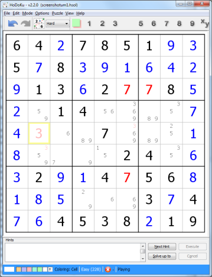

Chapter 1: Introduction
Table of Contents
Features
With literally thousands of sudoku programs available why should you use this one?
Most solver programs have a rather restricted feature set. They can create sudokus (normally only rather simple ones), they can solve easy sudokus using logic, but have to resort to Brute Force (or guessing) rather early because of their limited set of techniques. They allow you to enter values and candidates and to show the solution. If you want more (for example learning new and more challenging techniques, analyzing harder sudokus...) the number of adequate programs decreases fast.
HoDoKu offers a very rich feature set, more different solving techniques than most other programs, a simple to use GUI and since it is written in Java it is available on other platforms besides Windows too.
A short list of things you can do with HoDoKu:
- Create sudokus in five different and fully configurable difficulty levels; create sudokus, that contain specific techniques (for example to practise new ways of solving sudokus). All sudokus created by HoDoKu are of course guaranteed to have a unique solution.
- Solve sudokus; use the hint system if you get stuck (fully configurable too of course)
- Show all available steps in a sudoku grid to study the different solving techniques; create different solutions for one and the same sudoku
- Pick from the list of over 90 different solving techniques currently supported by HoDoKu
- Highlight available steps in the sudoku grid (a great tool for learning new techniques)
- Use HoDoKu's filters to find simple steps easier and faster (so you can concentrate on the hard ones)
- Arbitrarily change the size of HoDoKu's main window; the sudoku area will always use as much space as possible
- Save sudokus and solutions to disk (sudokus can be saved in any state)
- Save configuration files to disk
- Unlimited undo/redo
- Create high resolution images of your sudokus
- Use HoDoKu's batch mode to create sudokus with specific properties or to solve sudokus with arbitrary solver configurations
- Print Sudoku booklets in various layouts
- If you prefer colors over numbers, try HoDoKu's new ColorKu mode
Display modes
HoDoKu has five different display modes (all modes available with ColorKu too):
- Sudoku only: Use this mode to play without any extras
- Sudokus + Summary: The summary shows which techniques HoDoKu used to solve your sudoku. This is a good way to decide if newly created sudokus will be fun to solve
- Sudoku + Solution Path: View HoDoKu's solution, change it to your liking, or create new ones
- Sudoku + Find all Steps: Lists all available steps for the current state of your sudoku
- Sudoku + Active Cell: Let's you set cells, toggle candidates, or choose colors using the mouse only.
The views can be switched via the View menu. If one of the non standard views (Summary, Solution path, Find all Steps or Active Cell) is selected it is possible to change the views using the tabs in the right hand panel.
Sudoku only view (standard)
The standard view shows the sudoku area, the hint area, a menu, a toolbar, and a status bar.
The toolbar contains:
- The undo/redo buttons
- The "Create new sudoku" button
- A combobox to choose the difficulty level for newly created sudokus
- Buttons for the filters (see Using filtering)
- Optionally: Buttons for displaying hints and steps.
The status bar contains pseudo buttons to choose a color for Coloring (see Using the mouse or Coloring) and to set the coloring mode (cell or candidate). If a sudoku is loaded, the rating (see Rating and difficulty levels) and a progress indicator (see Progress indicator) are displayed. The last label shows the program mode (see Game modes).
In the sudoku area givens (cell values that belong to the initial state of the sudoku) are shown in black, they cannot be altered. Values entered by the player are shown in blue and the candidates (remaining possible values for a cell) are drawn in lightgray. The candidates are only shown if "Show all candidates" is checked in the Options menu. Depending on the other selections in that menu HoDoKu can mark invalid values or values that deviate from the correct solution.
The screenshot shows both possibilities: Value 7 was incorrectly entered in r3c6 (the cell in the third row and the sixth column). This collides with the (correct) 7 in r3c7 (same value twice in the same row) and r7c6 (same value twice in the same column). If "Show invalid values" is checked all three cells are marked as invalid and shown in red.
Value 3 was entered in r5c2. This is not invalid (it does not violate the rules of Sudoku) but the correct solution has a 5 in that cell. If "Show deviations" is checked in the Options menu the 3 is marked as deviation and shown in light red.
The same colors are applied to errors in the candidates as well. Setting 3 in r5c2 deletes 3 as possible candidate from r4c2, r6c2, r5c6 and r5c8. Unfortunately 3 is the correct solution for cells r6c2 and r5c6 so the candidates 3 in those cells are shown light red too.
The hint area at the bottom of the window displays a textual representation of the step that is currently highlighted in the sudoku area. The hint system is explained in detail in Using the hint system in chapter 2. It can be removed to leave more space for the sudoku area, especially on screens with a low vertical resolution (laptops...).
Summary view
The summary view shows a table with all steps HoDoKu used to solve the sudoku, together with the number of steps contained in the solution for every technique and their rating (see Rating and difficulty levels).
The summary view is especially useful if you try to decide whether a newly created sudoku will be fun for you to solve. Sudokus that contain techniques you don't like can be easily skipped (of course you can configure HoDoKu to never present sudokus containing such techniques in the first place, see Creating sudokus).
In the screenshot the optional hint/steps buttons are visible in the tool bar. The hint panel has been removed to enlarge the sudoku area. The progress indicator in the status bar shows, how far the sudoku has been solved already: The score of the remaining steps is 20 % of the sudoku's total score and there is at least one unfair step left (indicated by the orange bullet).
Solution Path view
The solution path view shows how HoDoKu solved the sudoku. You can easily jump to any point of the solution with a simple double click and you can use this view as a starting point for your own solutions.
Solutions are not invariable, they can be changed. New or different steps can be inserted into the solution path (see Working with solutions). HoDoKu supports as many solutions for one and the same sudoku as you like. Solution paths are automatically stored together with a sudoku.
Find all Steps view
"Find all Steps" can list all available solution techniques at the current state of the sudoku. Especially with easy or medium sudokus the sheer number of different steps can be a bit overwhelming. To avoid that the search can be freely configured (see Finding all possible steps).
The Find all Steps view is used to insert new steps into existing solutions. It is also a great learning tool and it can be used to confirm whether a manually found step is really valid or whether the eliminations provided by that step are only coincidentally correct (search for all occurences of that technique and notice whether your's shows up or not).
Active Cell view
"Active Cell" is a magnifying glass for the selected cell or region of cells. It allows you to set values in cells or to toggle candidates. In the screenshot candidate 2 can be excluded from all selected cells (due to the Locked Triple in cells r123c9) by simply clicking the "2" under "Exclude Candidates".
The color palettes in the lower part of the panel allow entering Coloring Mode, either for cells or for candidates (see Using the mouse or Coloring).
Change size of views
The size of HoDoKu's views can be changed almost without restrictions. The sudoku view will always try to take as much space as possible. The top border of the hint area and the right border of the sudoku area can be dragged using the mouse to change the size of the various panels.
Hint panel and toolbar can be made invisible to make more space available to the sudoku area. This can be especially helpful on displays with a low vertical resolution, e.g. in laptops or tablets. The menu item "View|Full screen mode" maximizes the sudoku area as much as possible.
The window layout is automatically stored at shutdown and restored at the next launch of HoDoKu. The menu item "View|Reset view" resets HoDoKu to it's standard window layout.
Change display font size
Normally HoDoKu uses the operating systems default settings when displaying menus or dialogs. It is however possible to change the default font size using Edit|Preferences|General: Uncheck "Use default font size" and set "Custom font size" to a value that seems right for you. This feature is especially useful for large monitors or for visually impaired people.
The screenshot shows HoDoKu's "All possible steps" view using a custom font size of "16".
ColorKu mode
HoDoKu in ColorKu mode uses colors instead of digits. Everything else works as in normal Sudoku mode.
Running HoDoKu
HoDoKu is written in Java/Swing and should therefore run on any platform supported by Java (tested on Windows and Linux - Ubuntu/GTK+-LAF). Since it is written in Java the Java Runtime Environment (JRE) version 1.6 or higher must be installed on your computer before you can run HoDoKu. The JRE can be downloaded from
http://www.oracle.com/technetwork/java/javase/downloads/index.html.
Windows
A Windows installer (*.msi) is available for all Windows versions. It creates a Start Menu entry and a desktop shortcut for HoDoKu and associates *.hsol and *.hcfg files with the program. HoDoKu can also be run from a USB stick (see below).
Other operating systems
For all operating systems other than windows hodoku.jar is needed. HoDoKu consumes rather a lot of memory (especially if you use the "Find all available steps" feature). The recommended way to run HoDoKu is:
java -Xmx512m -jar hodoku.jar
Note: the parameter "-Xmx" is specific to the JRE provided by Oracle. If you use a different JRE, please look up the correct parameter for setting the maximum heap size at startup in the documentation of your JRE.
Portable HoDoKu
HoDoKu is portable: Just put hodoku.exe or hodoku.jar on a USB stick, a DVD or a read only network drive and start it from there directly. As long as a suitable JRE is installed on the system, HoDoKu will run without problems.
You can use your own set of options with the portable scenario too: Configure HoDoKu to your liking, store the configuration in a file named "hodoku.hcfg" (without the apostrophes) and put the file in the same directory as the exe or jar file. The options will be loaded automatically at program start.
Caution: Changes to the configuration will not be automatically saved to the hodoku.hcfg described above.
Copyright © 2008-12 by Bernhard Hobiger
Last modified on May 5, 2025 by shorty#3746
(based of the 1to9only Github repo)
All material on this page is licensed under the GNU FDLv1.3.